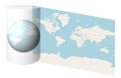
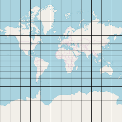
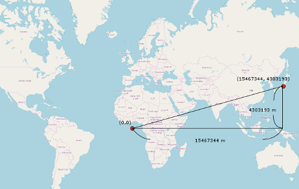
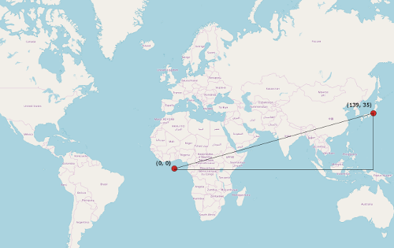
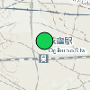
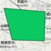

https://www.qgis.org/ja/site/
シェープファイルを閲覧，加工できるGISフリーソフト．
https://www.openstreetmap.org/
https://wiki.openstreetmap.org/wiki/Main_Page
OSM(OpenStreetMap)は地理情報をフリーで利用出来るように立ち上げられたプロジェクトである．
OSMから地図やシェープファイルがフリーで提供されている．
https://www.esrij.com/gis-guide/esri-dataformat/shapefile/
https://www.esrij.com/cgi-bin/wp/wp-content/uploads/documents/shapefile_j.pdf
図形情報や属性情報がまとまったファイルを指す．
ESRI社が提唱したフォーマットでGISで標準となっている．
シェープファイルには少なくとも下記ファイルが含まれる．
| 拡張子 | 内容 |
|---|---|
| .shp | 図形情報が格納されている． |
| .dbf | 属性情報が格納されている． |
| .shx | 図形と属性の対応関係が格納されている． |
現行の制約では，「1つのシェープファイルには1つのジオメトリしか格納することができない」となっている．
背景地図のことを指す．
ESRIから無償のベースマップが公開されている．
| 地図 | URL |
|---|---|
| 白地図 | https://services.arcgisonline.com/ArcGIS/rest/services/Canvas/World_Light_Gray_Base/MapServer |
| 衛星画像 | https://services.arcgisonline.com/ArcGIS/rest/services/World_Imagery/MapServer |
| 道路地図 | https://services.arcgisonline.com/ArcGIS/rest/services/World_Street_Map/MapServer |
| 起伏図 | https://services.arcgisonline.com/ArcGIS/rest/services/World_Terrain_Base/MapServer |
| 地形図 | https://services.arcgisonline.com/ArcGIS/rest/services/World_Topo_Map/MapServer |
ベースマップにレイヤを重ねることで任意の情報と地理情報を組み合わせて分析することができる．
https://docs.qgis.org/2.14/ja/docs/gentle_gis_introduction/coordinate_reference_systems.html
CRS(Coordinate Reference System)ともいう．
地球の実際の場所を二次元でどのように表現するかを決定する．
主に投影座標系と地理座標系に分類される．
https://www.esrij.com/gis-guide/coordinate-and-spatial/coordinate-system/
3次元の地球を2次元の平面に投影してXY座標で表現する座標系を投影座標系という．
地図アプリのデファクトスタンダードとして使用されている投影座標系はWebメルカトルである．
Webメルカトルは昔EPSG:900913が使われていたが現在はEPSG:3857を使う．
Webメルカトルでは地球に円筒をかぶせて，2次元の平面に投影する．

経線はそれぞれ等間隔，平行となる．
緯線は平行だが，経度が赤道から離れるほど間隔が大きくなる．

赤道と本初子午線の交点を中心とし，中心から何m離れているかを座標で表現する．

https://www.ibm.com/support/knowledgecenter/ja/SS6NHC/com.ibm.db2.luw.spatial.topics.doc/doc/csb3022a.html
EPSGコードは4326．
緯度，経度，高度を用いて表現する．
赤道と本初子午線の交点を中心とし，座標の単位は角度で表す．

http://www.epsg.org/
EUROPEAN Petroleum Survey Group．
空間参照系や座標変換の定義をまとめている．
現実世界の物(標識，道路，建物等)をベクターデータ化したもの．
地物ともいう．
ポイント，ライン，ポリゴンの3種類存在する．
フィーチャをテキスト形式で表現するフォーマット．
| Type | Exanple | Image |
|---|---|---|
| Point | POINT (139.621002802592 35.7119406409266) |  |
| Line | LINESTRING (139.548599326586 35.7376245768467,139.607394853493 35.7118940200852,139.657922259429 35.7230822398456) | |
| Polygon | POLYGON ((139.540790545669 35.7797450710378,139.600504752684 35.7756458256734,139.599126732522 35.741352953488,139.552733387072 35.7424714324349,139.540790545669 35.7797450710378)) |  |
SQL Serverでの実用例を示す．
例えば以下のようなフィーチャを格納するテーブルがあったとする．
CREATE TABLE SAMPLE_FEATURE(SHAPE geometry NULL);
以下のようにWKTからgeometryインスタンスを生成することでフィーチャを登録することができる．
INSERT INTO SAMPLE_FEATURE(SHAPE) VALUES(geometry::STPointFromText('POINT(135 35)', 4326));
DBを確認すると確かにフィーチャが登録されていることがわかる．
SELECT SHAPE FROM SAMPLE_FEATURE;
| SHAPE |
|---|
| 0xE6100000010C0000000000E060400000000000804140 |
WKT形式でフィーチャを取得することもできる．
SELECT SHAPE.STAsText() FROM SAMPLE_FEATURE;
| SHAPE |
|---|
| POINT(135 35) |